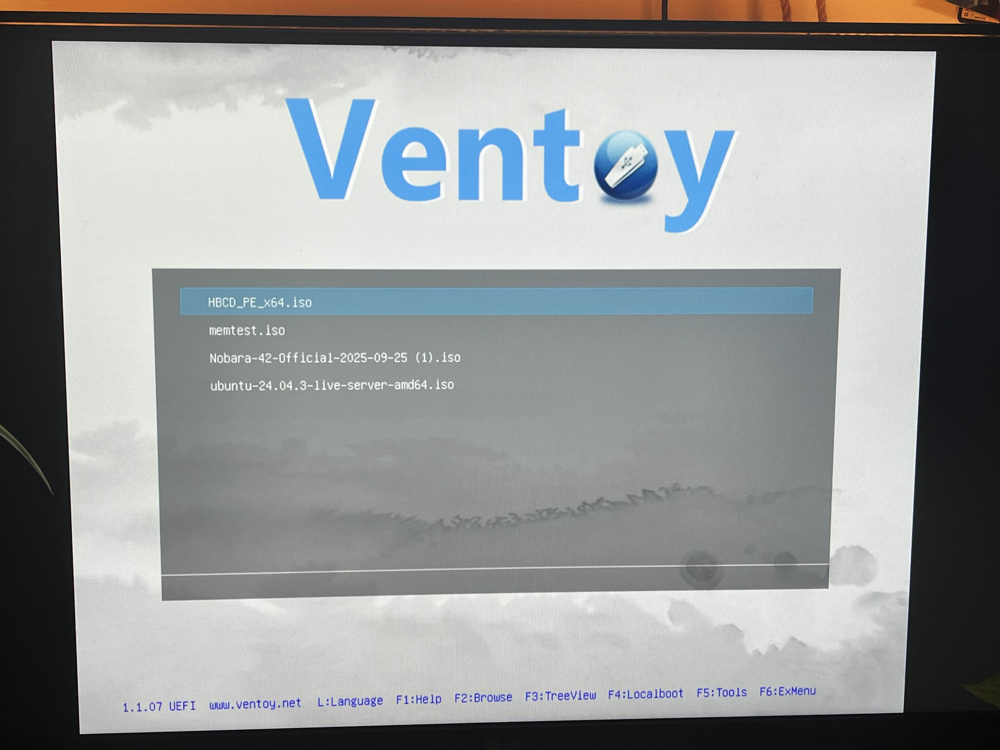
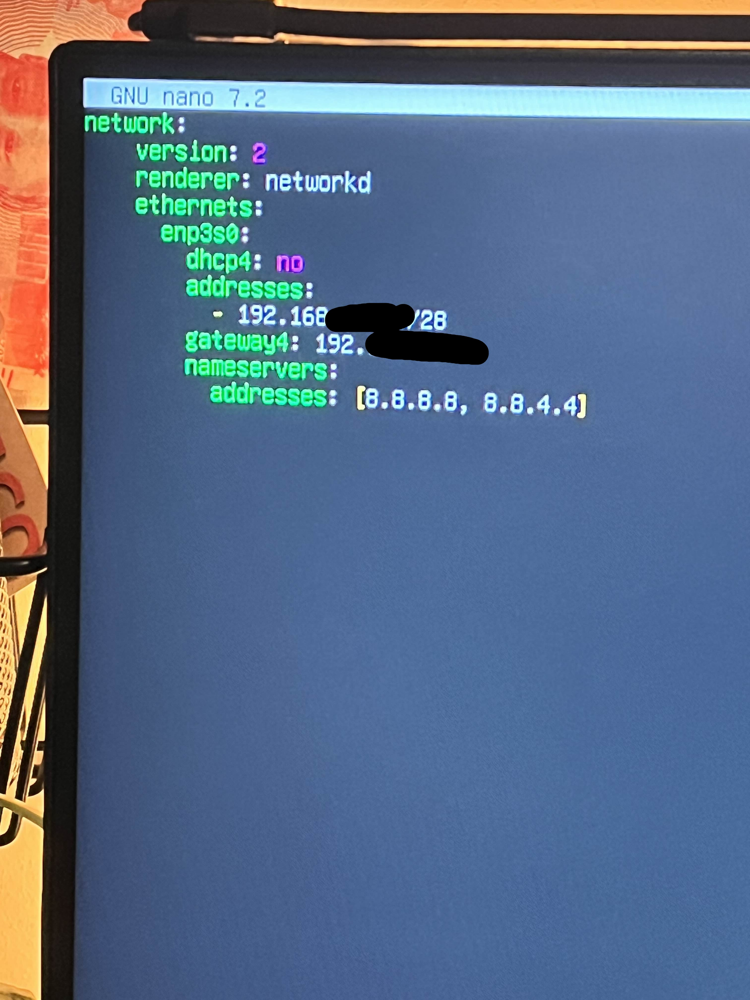
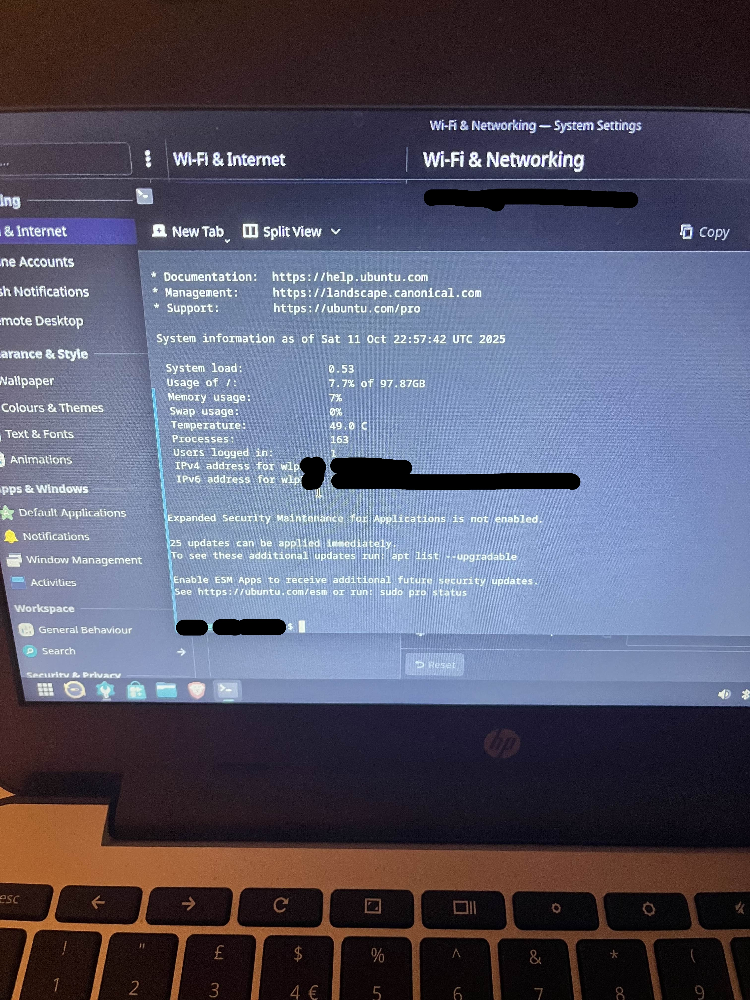

Documentation
Equipment
Building equipmentGigabyte Brix
The Gigabyte BRIX serves as the central component of the homelab, functioning as the main Linux ubuntu server that will host multiple virtual machines and Docker containers. It also operates as the NAS (Network Attached Storage) for file backups, ISO images, and shared resources. Despite its small form factor, the BRIX provides reliable performance for continuous uptime and lightweight virtual workloads.
Tp Link 105SG
The TP-Link 105SG switch connects all homelab devices together, forming the local network backbone. It ensures stable gigabit communication between the server, personal PCs, and external management devices. Although simple, this unmanaged switch provides consistent throughput and low latency for small-scale lab networking.
Main PC (RTX 4070 Super, 32GB RAM) — No Cost
The main PC provides high-performance compute power for running resource-intensive virtual machines and AI-related workloads, including large language models (LLMs) and data-heavy containers. It acts as the lab’s powerhouse for testing advanced deployments, GPU acceleration, and demanding simulation environments.
Chromebook with Linux (Nobara) — No Cost
The Chromebook running Linux Nobara acts as client for network testing.
Surface Pro 9 (Personal PC) — No Cost
The Surface Pro 9 is used for running smaller virtualized services that require minimal resources, such as local test environments or lightweight monitoring tools. It also serves as a documentation and administration device, managing dashboards, VPN access, and project notes.
Building and Configuring the Homelab
Purpose and goalsBuilding
Here is are the devcies connected to each other, each device is connected using a cat 6 rj45 ethernet cable.
Before running and installing the Operating System, its a good idea to run tests on the equipment. Ventoy is an excellent tool, it runs on a USB and allows you to put multiple isos on the USB drive allowing you to reuse multiple iso's.To check the status of the RAM, memtest86+ is a great tool, and runs on both UEFI and Legacy BIOS motherboards. For the HDD, Heron HDPE provides a minamalist Windows 11 installation with the most popular tools such as HDD scan.
 Ventoy with 4 ISOsTo run the Linux server, Linux Ubuntu server was used. Ubuntu server provides a minamalist and easy set up for new users and also comes with a CLI cheatsheet.
Configuring
Configuring was a new technichal challenge
With no router being in the configuration, a newly connected device is not assigned an IP.
Newly assigned ip addresses are given out by hardware on the router or a server via DHCP which automatically gives an ip address to a device that has connected to a network.
 Since there is DHCP, no ip address is given to this device.
Since there is DHCP, no ip address is given to this device.
So to address this issue, assigning a STATIC ip address is one way of connecting multiple devices for communication.
Here typing the linux command ip addr show will show the NICs on the device.
the given interface has no ip Address
First we create a Netplan with sudo nano /etc/netplan/01-netcfg.yaml
This is what i've used below, the slash indicates that this is a subnet and is done as to not conflict with the exisiting wifi network.
This ip address /28 is split into 16 addresses, one ip adress is given to address the network.
 .YAML file with the network configThe server is set up with the ip adress ending in the netplan, and applied.
On the chromebook, a .19 ending ip adress is used.
When you SSH into the server (Image above), running the command ssh -v remoteServerName@ipaddress will show you the steps that it takes to connect to the servers. The username and the server name shows, highlighting the successfull connection to the server, meaning the devices can communicate.
 Successfully SSH'd into the server, from the client, the details can be viewed